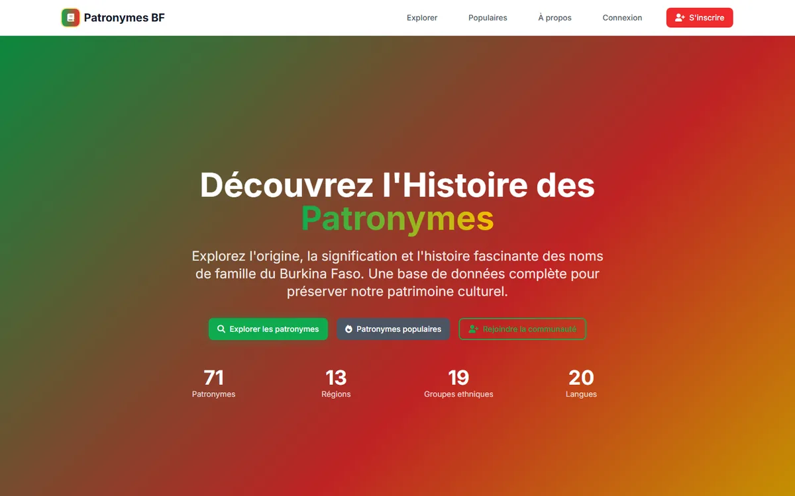

En ligne

Développeur web · Ministère · 2025
Le répertoire des patronymes du Burkina Faso
Origine, signification, histoire et totem des noms de famille, avec recherche, contributions validées et gestion des rôles.
LaravelPostgreSQLLivewireUML
Visiter la plateforme ↗